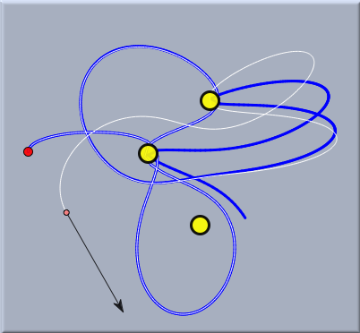
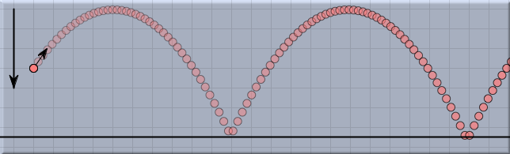
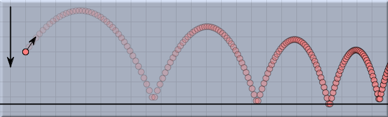

環境
「環境」は
CindyLab で非常に 特別な役割を演じます。
CindyLab の他の対象とは異なり、特定のモードや特定の幾何学的対象はそこにはありません。環境は多かれ少なかれ、一般的に存在するものです。環境の作用は、インスペクタまたは
CindyScript によって変更することができます。環境は、次の要素に影響を及ぼします。:
- シミュレーションにおける数値的正確さ
- 重力や摩擦のような力
- いくつかの物体によるシステムの定義
- バネの動作
まず、これらに影響を与えるものをすべてリストアップし、それからいくつかの例を示します。
環境設定インスペクタ
インスペクタウィンドウの小さな地球の絵のラベルのついたタブを押すと、4つのグループからなる環境設定インスペクタに入ります。
それぞれのグループの働きを、以下に詳細に示します。:
正確度
CindyLabは、物理的運動の数値的シミュレーションに基づいています。 数値的シミュレーションは、別々の時間ステップで進行します。運動における別々の標本点の間では、一般に、大きな時間ステップにより正確度は低くなります。しかしながら、より少ない標本点を使うことは、より速いシミュレーションを行うことができるという長所があります。そのため、速度と正確度にはトレードオフの関係があります。
CindyLab のユーザーはこの効果に気がついているに違いありません。さらに、必ずしも生成されるすべての時間ステップについて図を描くのではないというのが実際的でしょう。
CindyLab の初期状態では、シミュレーションが比較的速くでき、すべての場面が描かれるようになっています。もし 正確度(accuracy) を上げるか、 フレーム(frame) を少なくする必要があれば、対応するスライダーでこれらのパラメータを調整することができます。正確度スライダーを右に動かせばシミュレーションの正確度が高くなります。それぞれの目盛で正確度はおよそ倍になります。フレームレートを変えずに正確度を上げると、アニメーションがスローモーションで見えるようになります。これは時々非常に有効な効果となります。
正確度スライダーと対応して、フレームスライダーの各目盛はそれぞれのフレームを半分にします。したがって、フレームスライダーが4の位置にあれば、各フレーム間で16ステップのシミュレーションが行われるのです。 もし、正確度とフレームのスライダーが同じ位置にあれば、シミュレーションの速度は最初の位置にあるのと同じ(すなわち同じ時間間隔で見える)ことになります。シミュレーションは几帳面に行われます。必要とされた計算の結果が、アニメーションの減速に終わるかも知れません。シミュレーションの状況によってちょうどよい設定を見つけるために、2つのスライダーをいろいろと動かしてみることを勧めます。
 |
| いろいろな正確度によるトレース |
上の図は、シミュレーションにおける正確度の影響を示します。このシミュレーションは3つの恒星の重力の影響下で動いている惑星を示します。最初のパラメータのわずかな違いが時間とともに非常に異なる経路につながるという点で、この状況はカオスと似ています。青と白の痕跡はともに同じ初期条件で計算されます。白の痕跡の正確度は青の4倍です。どれだけわずかな分岐により非常に異なる経路に至っているか、よく観察してください。
力についての環境
環境のこの部分では、パラメータはすべてのシミュレーションの対象に一斉に作用するように設定されます。
バネの強さ スライダーはすべてのバネ定数を変更するグローバルパラメータです。 (
バネを参照). したがって、このスライダーを動かすことにより、すべての力の強弱を調整できます。
重力 スライダーは、すべての質点に垂直に働く重力を設定します。重力 モードでの個々の重力を調整するために、このスライダーを使うと好都合です。
摩擦力 スライダーは、おそらくこのグループで最も重要なスライダーです。それは、すべての質点に適用される摩擦力を発生します。日常的に現実味のあるシミュレーションを行うためには若干の摩擦力を加えなければなりません。そうすると、外部の力によって動かされないシミュレーションは最後にはつり合った状態で止まります。もし、摩擦力が加えられなければ、物体は永久に動き続けます。
次の図は、摩擦力がある場合とない場合について、物体の弾道の様子を示します。
 | |
 |
摩擦力なし
| |
摩擦力あり
|
複数の物体の動き
2つの自由質点間の相互作用では、
バネ,
ゴムバンド,あるいはCoulomb ForceJ加えることによって、はっきりとその相互作用を指定しなければなりません。しかしながら、電子、多くの惑星系、あるいは多数のビリヤードのボールのような、相互作用をする物体の全体的効果について研究することは魅力的なことです。このグループの3つのチェックボックスによって、そのような振舞いを定義することができます。このような振舞いについての広範囲な応用があるので、
複数の粒子システムとしてこの話題を設けました。
このうち、「重力センサを使う」という項目は、重力センサを搭載したコンピュータの場合に表示されます。
バネの動作
2つの動作スライダーにより、
バネの自然長の動作を支配することができます。すべてのバネの動作は同期され、全体的な動力によって動かされます。 この2つのスライダーで、全体的な速度と動作の強さを変えることができます。
環境とCindyScript
環境は、いくつかの重要な量へのアクセスを許可し、シミュレーションの設定します。環境は、幾何学的要素に対しては直接には関与できないので、環境の対象を操作するために
simulation()関数があります。特に、これを通してアクセスできる値は次のものです。:
- strength: scaling factor の扱い(実数、読み書き可)
- simulation().potential: シミュレーションの全体的位置エネルギー; これに、バネ、恒星、重力の位置エネルギーが微粒子間の位置エネルギーと同様に加えられる。(実数、読み出しのみ可、座標系の選択に依存する付加的定数のみ定義可)
- simulation().pe: simulation().potentialの省略形
- simulation().kinetic: シミュレーションにおける全体的な運動エネルギー; この値のために、運動する粒子の運動エネルギーが加えられる。 (実数、読み出しのみ可、座標系の選択に依存する付加的定数のみ定義可)
- simulation().ke: simulation().kineticの省略形
- friction: 全体的な摩擦力 (実数、読み書き可)
- gravity: 全体的な重力定数 (実数、読み書き可)
次もご覧ください